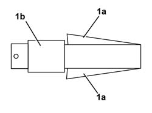
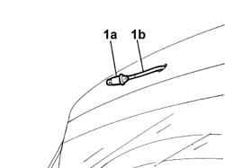

5050C10 rear window washer jet - r+r clean and/or position
- Path
- Procedures > 50 AUXILIARY UNITS > 5050 SCREEN WASHERS AND HEADLAMP WASH/WIPE > 5050C rear wash/wipe > 5050C10 rear window washer jet - r+r clean and/or position
- Kind
- repair procedure (removal / refitting; the operation number is the code)
- Applies to
- all engines; all production periods
- Interactive page
- https://sloeber94.github.io/elrnDB-fDbl/en/#/2584865
Applies to: all engines; all production periods
 Removing
Removing
 Refitting
RefittingDisconnect the battery negative terminal.
Op. 5550D16 THIRD BRAKE LIGHT - R+R
1. Working via the housing for the third brake light, press on the tabs (1a) of the jet (1b) bayonet fitting using an ordinary 9 mm fixed spanner, pushing the jet outwards at the same time.

Applies to: all engines; all production periods
Release the jet from the housing.
1. Disconnect the jet (1a) from the windscreen washer fluid supply pipe (1b).

Applies to: all engines; all production periods
Refitting
RemovingCheck that the jet is not damaged or obstructed.
Connect the jet to the windscreen washer fluid supply pipe.
Fit the jet in its housing and direct the spray towards the rearscreen.
Op. 5550D16 THIRD BRAKE LIGHT - R+R
Connect the battery negative terminal.